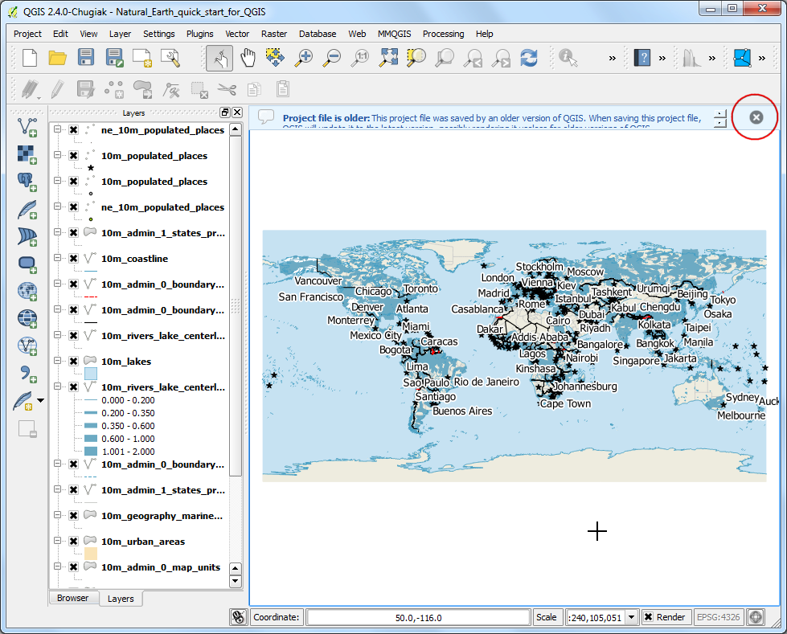

Georeferencing Topo Sheets and 스캔지도
[ Download PDF A4 Letter ]
대부분의 GIS 프로젝트는 래스터 데이터에 대해 지오레퍼런싱 작업이 필요합니다. *Georeferencing*이란 래스터 데이터의 각 픽셀에 실세계 좌표를 할당하는 과정을 말합니다. 이러한 좌표는 많은 경우 현장조사를 통해 얻어지는데 현장조사에서 GPS기기를 이용하여 영상이나 지도에 있는 특정물의 좌표값을 얻어내는 것입니다. 어떤 경우에는 스캔을 한 지도를 디지타이징할 때 지도 자체에 표시된 마킹을 통해 좌표값을 얻을 수 있습니다. 이러한 샘플 좌표 혹은 GCPs ( Ground Control Points )를 이용하여 영상은 변화되고 선택된 좌표체계 내에서 바로잡힙니다. 이 예제에서는 매우 정밀한 지오레퍼런싱 작업을 하기 위해 개념, 전략 그리고 QGIS내 도구에 대해 논의될 것입니다.
과업 개요
예제에서는 스캔된 1870년 남인도 지도를 사용하고 그것을 QGIS를 사용하여 지오레퍼런할 것입니다.
과정
1.Georeferencing in QGIS is done via the ‘Georeferencer GDAL’ plugin. This is a
core plugin - meaning it is already part of your QGIS installation. You just
need to enable it. Go to and enable the Georeferencer GDAL plugin in the
Installed tab. See 플러그인 사용하기 for more details on how to work
with plugins.

래스터 메뉴에 플러그인이 설치됩니다. 메뉴에서 플러그인을 열기위해 래스터 –> 지오레퍼런서 –> 지오레퍼런서 를 클릭합니다.

플러그인 창은 2개 섹션으로 나뉘어져 있습니다. 윗부분은 래스터가 표현되고 아랫 부분은 GCP가 나타나는 것을 보이는 표가 있습니다.

이제 JPG 이미지를 열겠습니다. 메뉴에서 파일 –> 래스터 열기 :menuselection:`File –> Open Raster`로 갑니다. 다운로드한 스캔한 지도를 찾고 열기 :guilabel:`Open`를 클릭합니다.

다음 화면에서 래스터 데이터의 좌표체계(CRS)를 선택하게 됩니다. 이것은 컨트롤 포인트의 투영체계와 데이텀을 명시하는 것입니다. 만약 GPS장비를 이용해서 현장에서 컨트롤 포인트를 확보했다면 WGS84 좌표체계 일 것입니다. 만약 스캔된 지도를 이렇게 지오레퍼런싱을 했다면 지도 그 자체에서 CRS정보를 얻을 수 있을 것입니다. 지도 이미지를 살펴보면 좌표는 위도/경도입니다. 데이텀정보는 주어져 있지 않습니다. 그래서 적절한 것으로 가정을 합니다. 이 지도가 인디아이고 매우 오래되었으므로 Everest 1830이 가장 적절할 것으로 확신합니다.

이미지가 위쪽 부분에 나타날 것입니다.

지도에 대해 좀 더 알아 보기 위해 툴바의 확대/팬 기능을 사용할 수 있습니다.

이제 지도의 몇몇 점들에 대해 좌표를 지정합니다. 확대해서 보면 좌표 격자가 표시된 것을 볼 수 있을 것입니다. 이 격자를 이용해서 격자가 만나는 점들의 X, Y좌표를 결정할 수 있습니다. 툴바에서 포인트추가 :guilabel:`Add Point`를 클릭합니다.

팝업창에서 좌표를 입력합니다. X는 위도, Y는 경도임을 기억하십시오. :guilabel:`OK`를 클릭합니다.

이제 상세한 정보가 포함된 첫번째 GCP 행 데이터를 가진 GCP표에 주목합니다.

마찬가지로 전체 이미지를 포괄할 수 있도록 적어도 4개의 GCP를 추가합니다. 점이 많을 수록 보다 정교한 이미지가 목표한 좌표에 등록됩니다.

일단 충분히 점들을 확보하면 메뉴에서 세팅 -> 변환설정 :menuselection:`Settings -> Transformation settings`으로 갑니다.

변환 설정 Transformation settings 다이알로그에서 변환 유형 Transformation type 에 신 플레이트 스플라인 Thin Plate Spline`를 선택합니다. 출력래스터에 :guilabel:`1870_southern_india_modified.tif`라고 입력합니다. 대상 SRS는 :guilabel:`EPSG:4326`를 선택합니다. 그러면 결과 이미지는 폭넓게 호환되는 데이텀이 됩니다. 완료후 QGIS에 불러오기 :guilabel:`Load in QGIS when done 옵션이 체크되어 있는지 확인합니다. :guilabel:`OK`를 클릭합니다.

지오레퍼런서 :guilabel:`Georeferencer`으로 되돌아와서 메뉴 파일 –> 지오레퍼런싱 시작 :menuselection:`File –> Start georeferencing`으로 갑니다. 이것은 GCP를 이용해서 이미지를 보정하는 과정이 시작되고 목표한 래스터가 만들어 집니다.

과정이 종료되면 QGIS에 지오레퍼런스 작업이 완료된 레이어가 나타날 것입니다.

지오레퍼런싱이 이제 완료되었습니다. 그러나 항상 그렇듯, 결과물을 검증하는 것은 좋은 실습자세입니다. 지오레퍼런싱이 정확한지 어떻게 확인할 수 있을까요? 이 경우에는 Natural Earth 데이터셋 같은 신뢰할 수 있는 자료원 에서 이 나라의 경계 shapefile을 불러들여 비교합니다. 매우 훌륭하게 잘 들어맞는 것을 볼 수 있을 것입니다. 약간의 에러가 있는데 보다 많은 컨트롤 포인트를 추가하고, 변환매개변수를 바꾸고 다른 데이텀을 적용해 봄으로써 개선할 수 있습니다.

{kind=link}
{kind=link}